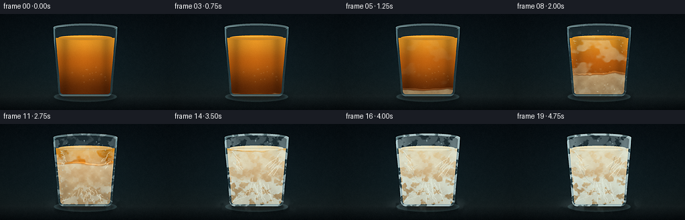
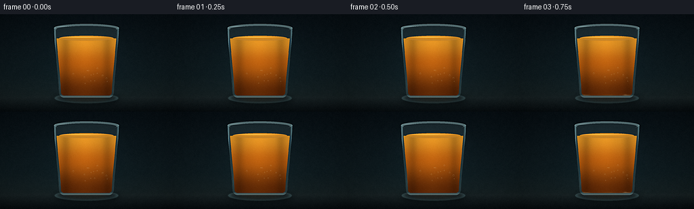

CODING AGENTS AS PIXEL WORLD MODELS
traex/DeepSeek-V4.1-Flash · phygen_094
点击播放 · 原生 RGB 像素
逐轮保存的候选
回放视频、检查图与代码变化。
每份候选均可单独播放。实际图片检查记录在下方工具轨迹中。
候选 01播放与检查图
点击播放 · 原生 RGB 像素


展开代码变化
--- 上一保存版本
+++ 本次保存版本
@@ -0,0 +1,612 @@
+from pathlib import Path
+import math
+
+import numpy as np
+from PIL import Image, ImageDraw, ImageFilter
+
+import artifact_io
+
+
+WIDTH = 256
+HEIGHT = 144
+FPS = 4.0
+FRAME_COUNT = 20
+SS = 4
+RW = WIDTH * SS
+RH = HEIGHT * SS
+
+CASE_DIR = Path(__file__).resolve().parent
+
+# Composition in final-frame pixels.
+TOP_Y = 20.5
+BOTTOM_Y = 123.5
+OUTER_LT = 79.5
+OUTER_RT = 175.5
+OUTER_LB = 87.0
+OUTER_RB = 168.0
+OUTER_RY = 6.1
+BOTTOM_RADIUS = 8.0
+
+INNER_INSET = 3.2
+INNER_TOP_Y = 22.0
+INNER_RY = 4.7
+SURFACE_Y = 35.6
+OIL_RX = 40.2
+OIL_RY = 3.8
+
+CX = (OUTER_LT + OUTER_RT) * 0.5
+
+
+def smoothstep(x):
+ x = np.clip(x, 0.0, 1.0)
+ return x * x * (3.0 - 2.0 * x)
+
+
+def lerp(a, b, t):
+ return a + (b - a) * t
+
+
+def make_mask():
+ return Image.new("L", (RW, RH), 0)
+
+
+def to_px(x, y):
+ return (x * SS, y * SS)
+
+
+def ellipse_mask(cx, cy, rx, ry):
+ image = make_mask()
+ draw = ImageDraw.Draw(image)
+ draw.ellipse(
+ (int((cx - rx) * SS), int((cy - ry) * SS),
+ int((cx + rx) * SS), int((cy + ry) * SS)),
+ fill=255,
+ )
+ return np.asarray(image, dtype=np.float32) / 255.0
+
+
+def tapered_glass_points(x_lt, x_rt, x_lb, x_rb, y_top, y_bottom, radius, steps=36):
+ points = []
+ for index in range(steps + 1):
+ t = index / steps
+ ease = t * t * (3.0 - 2.0 * t) * 0.32 + t * 0.68
+ points.append((lerp(x_lt, x_lb, ease), lerp(y_top, y_bottom - radius, t)))
+ center_x = x_lb + radius
+ center_y = y_bottom - radius
+ for index in range(1, 11):
+ angle = math.radians(180.0 - index * 9.0)
+ points.append((center_x + radius * math.cos(angle),
+ center_y + radius * math.sin(angle)))
+ center_x = x_rb - radius
+ for index in range(1, 11):
+ angle = math.radians(90.0 - index * 9.0)
+ points.append((center_x + radius * math.cos(angle),
+ center_y + radius * math.sin(angle)))
+ for index in range(1, steps + 1):
+ t = index / steps
+ ease = t * t * (3.0 - 2.0 * t) * 0.32 + t * 0.68
+ points.append((lerp(x_rb, x_rt, ease), lerp(y_bottom - radius, y_top, t)))
+ return points
+
+
+def polygon_mask(points):
+ image = make_mask()
+ draw = ImageDraw.Draw(image)
+ draw.polygon([to_px(x, y) for x, y in points], fill=255)
+ return np.asarray(image, dtype=np.float32) / 255.0
+
+
+def blur_mask(mask, radius):
+ image = Image.fromarray(np.clip(mask * 255.0, 0, 255).astype(np.uint8))
+ image = image.filter(ImageFilter.GaussianBlur(radius * SS))
+ return np.asarray(image, dtype=np.float32) / 255.0
+
+
+def resize_noise(seed, cells_x, cells_y):
+ rng = np.random.default_rng(seed)
+ small = rng.random((max(2, cells_y), max(2, cells_x)), dtype=np.float32)
+ image = Image.fromarray(np.clip(small * 255.0, 0, 255).astype(np.uint8))
+ image = image.resize((RW, RH), Image.Resampling.BICUBIC)
+ return np.asarray(image, dtype=np.float32) / 255.0
+
+
+def fbm(seed, base_x=9, base_y=6, octaves=4):
+ total = np.zeros((RH, RW), dtype=np.float32)
+ weight = 0.0
+ amplitude = 1.0
+ for octave in range(octaves):
+ total += amplitude * resize_noise(seed + octave * 17, base_x * (2 ** octave),
+ base_y * (2 ** octave))
+ weight += amplitude
+ amplitude *= 0.52
+ total /= weight
+ low = np.percentile(total, 1.0)
+ high = np.percentile(total, 99.0)
+ return np.clip((total - low) / max(high - low, 1e-5), 0.0, 1.0)
+
+
+def composite(base, color, alpha):
+ a = np.clip(alpha, 0.0, 1.0)[..., None]
+ color = np.asarray(color, dtype=np.float32)
+ base[:] = base * (1.0 - a) + color * a
+
+
+def composite_rgba(base, rgba, clip_mask=None):
+ layer = np.asarray(rgba, dtype=np.float32) / 255.0
+ alpha = layer[..., 3]
+ if clip_mask is not None:
+ alpha *= clip_mask
+ a = alpha[..., None]
+ base[:] = base * (1.0 - a) + layer[..., :3] * 255.0 * a
+
+
+def add_light(base, color, alpha):
+ base += np.asarray(color, dtype=np.float32) * np.clip(alpha, 0.0, 1.0)[..., None]
+
+
+def build_background(yf, xf):
+ image = np.zeros((RH, RW, 3), dtype=np.float32)
+ yn = np.clip(yf / HEIGHT, 0.0, 1.0)
+ top = np.array([8, 16, 21], dtype=np.float32)
+ upper = np.array([15, 27, 31], dtype=np.float32)
+ lower = np.array([22, 33, 35], dtype=np.float32)
+ table_top = np.array([25, 35, 37], dtype=np.float32)
+ table_bottom = np.array([7, 13, 16], dtype=np.float32)
+ for row in range(RH):
+ y = yf[row, 0]
+ if y < 90.0:
+ t = y / 90.0
+ color = lerp(top, upper, t)
+ elif y < 119.0:
+ t = (y - 90.0) / 29.0
+ color = lerp(upper, lower, t)
+ elif y < 123.0:
+ t = (y - 119.0) / 4.0
+ color = lerp(lower, table_top, t)
+ else:
+ t = np.clip((y - 123.0) / 21.0, 0.0, 1.0)
+ color = lerp(table_top, table_bottom, t)
+ image[row, :, :] = color
+
+ x = xf[0, :]
+ y = yf[:, 0][:, None]
+ backlight = np.exp(-((x - 124.0) / 51.0) ** 2) * np.exp(-((y - 61.0) / 76.0) ** 2)
+ backlight = backlight * np.clip((yf - 15.0) / 30.0, 0.0, 1.0)
+ backlight = backlight * np.clip((128.0 - yf) / 18.0, 0.0, 1.0)
+ add_light(image, (6.0, 15.0, 17.0), backlight * 0.55)
+
+ # A restrained cool reflection separates the glass from the dark table.
+ reflection = np.exp(-((x - CX) / 29.0) ** 2) * np.clip((yf - 121.0) / 7.0, 0.0, 1.0)
+ reflection = reflection * np.clip((143.0 - yf) / 18.0, 0.0, 1.0)
+ add_light(image, (18.0, 28.0, 29.0), reflection * 0.14)
+
+ fine = fbm(1901, base_x=64, base_y=36, octaves=2) - 0.5
+ image += fine[..., None] * 1.8
+ return image
+
+
+def draw_coaster(base, xf, yf):
+ coaster = ellipse_mask(CX, 124.0, 47.0, 7.5)
+ coaster_shadow = blur_mask(ellipse_mask(CX + 1.0, 126.0, 50.0, 8.5), 4.5)
+ composite(base, (3, 8, 10), coaster_shadow * 0.42)
+ composite(base, (40, 53, 55), coaster * 0.88)
+ rim = np.clip(blur_mask(coaster, 0.9) - blur_mask(ellipse_mask(CX, 123.5, 43.2, 5.5), 1.1), 0, 1)
+ add_light(base, (31, 51, 53), rim * 0.45)
+
+ shadow = blur_mask(ellipse_mask(CX + 1.5, 126.0, 44.0, 6.5), 3.6)
+ composite(base, (3, 7, 9), shadow * 0.50)
+ underglow = blur_mask(ellipse_mask(CX, 124.0, 31.0, 4.0), 3.0)
+ add_light(base, (74, 43, 12), underglow * 0.20)
+
+
+def draw_glass_body(base, outer_mask, inner_mask, wall_mask, xf, yf, phase):
+ inner_tint = inner_mask * (0.16 + 0.06 * phase)
+ composite(base, (112, 151, 158), inner_tint)
+
+ side_distance = np.minimum(np.abs(xf - OUTER_LT), np.abs(xf - OUTER_RT))
+ side_light = np.exp(-(side_distance / 3.4) ** 2) * wall_mask
+ add_light(base, (105, 151, 158), side_light * (0.23 + 0.10 * phase))
+
+ wall_tint = wall_mask * 0.23
+ composite(base, (103, 139, 144), wall_tint)
+
+ left_edge = np.exp(-((xf - (OUTER_LT + 1.6)) / 0.8) ** 2) * outer_mask
+ right_edge = np.exp(-((xf - (OUTER_RT - 1.3)) / 0.9) ** 2) * outer_mask
+ add_light(base, (153, 190, 192), left_edge * 0.36)
+ add_light(base, (121, 167, 173), right_edge * 0.28)
+
+ bottom_glow = np.exp(-((yf - (BOTTOM_Y - 1.4)) / 1.5) ** 2) * outer_mask
+ add_light(base, (146, 176, 174), bottom_glow * 0.26)
+
+ # Thick rim: a cool outer ellipse and a darker inner bevel.
+ outer_top = ellipse_mask(CX, TOP_Y, (OUTER_RT - OUTER_LT) * 0.5, OUTER_RY)
+ inner_top = ellipse_mask(CX, INNER_TOP_Y, (OUTER_RT - OUTER_LT) * 0.5 - 3.9, INNER_RY)
+ rim_band = np.clip(outer_top - inner_top, 0.0, 1.0)
+ composite(base, (126, 159, 162), rim_band * 0.56)
+ rim_highlight = np.exp(-((yf - (TOP_Y - 2.1)) / 0.72) ** 2) * rim_band
+ rim_highlight = rim_highlight * np.exp(-((xf - (CX - 13.0)) / 28.0) ** 2)
+ add_light(base, (205, 224, 222), rim_highlight * 0.48)
+
+ rim_shadow = np.exp(-((yf - (TOP_Y + 2.1)) / 0.65) ** 2) * rim_band
+ composite(base, (22, 37, 40), rim_shadow * 0.45)
+
+ # Soft window reflection runs down the left wall.
+ reflection = np.exp(-((xf - (OUTER_LT + 11.0)) / 2.3) ** 2)
+ reflection = reflection * smoothstep((yf - 29.0) / 7.0)
+ reflection = reflection * (1.0 - smoothstep((yf - 102.0) / 13.0))
+ reflection = reflection * wall_mask
+ add_light(base, (168, 205, 207), reflection * 0.15)
+
+
+def oil_base_color(xf, yf, phase):
+ depth = np.clip((yf - SURFACE_Y) / (BOTTOM_Y - SURFACE_Y - 7.0), 0.0, 1.0)
+ top = np.array([222, 146, 36], dtype=np.float32)
+ middle = np.array([181, 91, 14], dtype=np.float32)
+ bottom = np.array([92, 38, 5], dtype=np.float32)
+ image = np.empty((RH, RW, 3), dtype=np.float32)
+ lower_mix = smoothstep((depth - 0.40) / 0.60)
+ for channel in range(3):
+ image[..., channel] = lerp(
+ lerp(top[channel], middle[channel], smoothstep(depth / 0.48)),
+ bottom[channel],
+ lower_mix,
+ )
+
+ center_light = np.exp(-((xf - (CX - 1.5)) / 15.0) ** 2)
+ center_light = center_light * (1.0 - depth * 0.52)
+ center_light = center_light * np.clip((yf - SURFACE_Y) / 5.0, 0.0, 1.0)
+ add_light(image, (66, 40, 8), center_light * (0.34 - 0.16 * phase))
+
+ edge_shadow = np.exp(-((np.abs(xf - CX) - 31.0) / 7.0) ** 2)
+ image *= (1.0 - edge_shadow[..., None] * 0.17)
+ return image
+
+
+def draw_oil(base, liquid_mask, inner_mask, xf, yf, phase, frame_index, cloud_noise, fine_noise):
+ surface_y = SURFACE_Y + 0.75 * smoothstep(phase)
+ liquid_mask = liquid_mask * (yf >= surface_y)
+ surface = ellipse_mask(CX, surface_y, OIL_RX, OIL_RY) * inner_mask
+ liquid_mask = np.maximum(liquid_mask, surface)
+
+ oil = oil_base_color(xf, yf, phase)
+ alpha = liquid_mask * 0.98
+ base[:] = base * (1.0 - alpha[..., None]) + oil * alpha[..., None]
+
+ depth = np.clip((yf - surface_y) / (BOTTOM_Y - surface_y - 7.0), 0.0, 1.0)
+ front_ease = smoothstep(np.clip(phase / 0.94, 0.0, 1.0))
+ front_y = lerp(BOTTOM_Y - 2.0, surface_y - 3.0, front_ease)
+ ragged = (cloud_noise - 0.5) * 7.0
+ frozen = smoothstep((yf - front_y - ragged) / 3.5)
+ frozen *= liquid_mask
+
+ patch_threshold = 0.73 - 0.30 * phase
+ patches = smoothstep((cloud_noise + (1.0 - depth) * 0.09 - patch_threshold) / 0.17)
+ patches *= liquid_mask * smoothstep((phase - 0.08) / 0.42) * 0.52
+
+ frozen_alpha = np.maximum(frozen * (0.67 + 0.31 * phase), patches)
+ frozen_alpha = np.clip(frozen_alpha * (0.82 + 0.18 * fine_noise), 0.0, 0.97)
+
+ frozen_top = np.array([229, 221, 190], dtype=np.float32)
+ frozen_bottom = np.array([192, 174, 132], dtype=np.float32)
+ frozen_color = np.empty_like(oil)
+ for channel in range(3):
+ frozen_color[..., channel] = lerp(frozen_top[channel], frozen_bottom[channel],
+ smoothstep(depth))
+ frozen_color += (fine_noise[..., None] - 0.5) * 13.0
+ a = frozen_alpha[..., None]
+ base[:] = base * (1.0 - a) + frozen_color * a
+
+ # Thin bright freeze front catches the cool side light.
+ front_band = np.exp(-((yf - front_y - ragged) / 0.85) ** 2)
+ front_band *= liquid_mask * smoothstep((phase - 0.05) / 0.18) * (1.0 - smoothstep((phase - 0.88) / 0.12))
+ add_light(base, (225, 207, 157), front_band * 0.20)
+
+ draw_crystals(base, liquid_mask, phase, frame_index)
+ draw_cracks(base, liquid_mask, phase)
+ draw_bubbles(base, liquid_mask, phase, frame_index)
+ draw_surface(base, inner_mask, surface_y, phase, frame_index, xf, yf)
+
+
+def draw_crystals(base, liquid_mask, phase, frame_index):
+ if phase < 0.12:
+ return
+ layer = Image.new("RGBA", (RW, RH), (0, 0, 0, 0))
+ draw = ImageDraw.Draw(layer)
+ rng = np.random.default_rng(4417)
+ growth = smoothstep((phase - 0.12) / 0.88)
+
+ seeds = []
+ for index in range(27):
+ if index < 17:
+ x = rng.uniform(91.0, 164.0)
+ y = rng.uniform(105.0, 119.0)
+ target_x = CX + (x - CX) * rng.uniform(-0.15, 0.30)
+ target_y = rng.uniform(48.0, 103.0)
+ else:
+ side = -1.0 if index % 2 == 0 else 1.0
+ x = CX + side * rng.uniform(33.0, 39.0)
+ y = rng.uniform(38.0, 58.0)
+ target_x = CX + side * rng.uniform(6.0, 27.0)
+ target_y = y + rng.uniform(10.0, 39.0)
+ delay = rng.uniform(0.03, 0.42)
+ max_length = rng.uniform(13.0, 32.0)
+ seeds.append((x, y, target_x, target_y, delay, max_length))
+
+ for x, y, tx, ty, delay, max_length in seeds:
+ local = smoothstep((growth - delay) / max(1e-4, 1.0 - delay))
+ if local <= 0.0:
+ continue
+ length = max_length * local
+ dx, dy = tx - x, ty - y
+ norm = max(math.hypot(dx, dy), 1e-5)
+ ux, uy = dx / norm, dy / norm
+ px, py = -uy, ux
+ segments = 4
+ points = [(x, y)]
+ for segment in range(1, segments + 1):
+ distance = length * segment / segments
+ jitter = rng.uniform(-1.4, 1.4)
+ points.append((x + ux * distance + px * jitter,
+ y + uy * distance + py * jitter))
+ color = (246, 239, 213, int(102 + 60 * local))
+ draw.line([to_px(px_, py_) for px_, py_ in points],
+ fill=color, width=max(1, int(0.9 * SS)), joint="curve")
+ for segment in range(1, segments):
+ bx, by = points[segment]
+ side = -1.0 if segment % 2 else 1.0
+ branch = length * rng.uniform(0.12, 0.27) * local
+ bx2 = bx + px * side * branch + ux * branch * 0.36
+ by2 = by + py * side * branch + uy * branch * 0.36
+ draw.line([to_px(bx, by), to_px(bx2, by2)],
+ fill=(233, 229, 205, int(82 + 44 * local)),
+ width=max(1, int(0.62 * SS)))
+
+ composite_rgba(base, layer, liquid_mask)
+
+
+def draw_cracks(base, liquid_mask, phase):
+ if phase < 0.69:
+ return
+ crack_phase = smoothstep((phase - 0.69) / 0.31)
+ layer = Image.new("RGBA", (RW, RH), (0, 0, 0, 0))
+ draw = ImageDraw.Draw(layer)
+ rng = np.random.default_rng(931)
+ origins = [(112.0, 62.0), (142.0, 74.0), (119.0, 91.0), (153.0, 101.0)]
+ for ox, oy in origins:
+ points = [(ox, oy)]
+ angle = rng.uniform(0.0, math.tau)
+ for step in range(5):
+ angle += rng.uniform(-0.36, 0.36)
+ length = rng.uniform(3.5, 7.5) * crack_phase
+ ox += math.cos(angle) * length
+ oy += math.sin(angle) * length
+ points.append((ox, oy))
+ alpha = int(90 * crack_phase)
+ draw.line([to_px(x, y) for x, y in points], fill=(58, 50, 38, alpha),
+ width=max(1, int(0.55 * SS)), joint="curve")
+ shifted = [(x + 0.45, y - 0.35) for x, y in points]
+ draw.line([to_px(x, y) for x, y in shifted],
+ fill=(249, 242, 217, int(70 * crack_phase)),
+ width=max(1, int(0.42 * SS)), joint="curve")
+ composite_rgba(base, layer, liquid_mask)
+
+
+def draw_bubbles(base, liquid_mask, phase, frame_index):
+ layer = Image.new("RGBA", (RW, RH), (0, 0, 0, 0))
+ draw = ImageDraw.Draw(layer)
+ rng = np.random.default_rng(6701)
+ freeze = smoothstep((phase - 0.12) / 0.62)
+ for index in range(14):
+ x = rng.uniform(94.0, 161.0)
+ base_y = rng.uniform(79.0, 115.0)
+ drift = (1.0 - freeze) * min(frame_index, 8) * rng.uniform(0.08, 0.24)
+ y = base_y - drift
+ radius = rng.uniform(0.45, 1.28)
+ alpha = int(55 + 25 * freeze)
+ draw.ellipse((*to_px(x - radius, y - radius * 0.82),
+ *to_px(x + radius, y + radius * 0.82)),
+ outline=(245, 218, 155, alpha), width=max(1, int(0.48 * SS)))
+ draw.arc((*to_px(x - radius, y - radius * 0.82),
+ *to_px(x + radius, y + radius * 0.82)),
+ start=195, end=325, fill=(255, 244, 209, min(190, alpha + 45)),
+ width=max(1, int(0.42 * SS)))
+ composite_rgba(base, layer, liquid_mask)
+
+
+def draw_surface(base, inner_mask, surface_y, phase, frame_index, xf, yf):
+ frozen = smoothstep((phase - 0.33) / 0.55)
+ warm = np.array([213, 139, 34], dtype=np.float32)
+ pale = np.array([225, 216, 181], dtype=np.float32)
+ color = lerp(warm, pale, frozen)
+ surface = ellipse_mask(CX, surface_y, OIL_RX, OIL_RY) * inner_mask
+ composite(base, color, surface * (0.66 + 0.27 * frozen))
+
+ top_light = np.exp(-((yf - (surface_y - 1.7)) / 0.66) ** 2) * surface
+ top_light = top_light * np.exp(-((xf - (CX - 7.0)) / 30.0) ** 2)
+ add_light(base, (251, 215, 136), top_light * (0.33 - 0.22 * frozen))
+
+ meniscus = np.exp(-((yf - (surface_y + 2.2)) / 0.64) ** 2) * surface
+ composite(base, (74, 39, 12), meniscus * (0.34 - 0.17 * frozen))
+ add_light(base, (246, 236, 209), meniscus * (0.11 + 0.12 * frozen))
+
+ if phase > 0.55:
+ layer = Image.new("RGBA", (RW, RH), (0, 0, 0, 0))
+ draw = ImageDraw.Draw(layer)
+ rng = np.random.default_rng(1279)
+ amount = smoothstep((phase - 0.55) / 0.45)
+ for index in range(18):
+ angle = rng.uniform(0.0, math.tau)
+ edge_x = CX + math.cos(angle) * OIL_RX * rng.uniform(0.72, 1.0)
+ edge_y = surface_y + math.sin(angle) * OIL_RY * rng.uniform(0.68, 1.0)
+ length = rng.uniform(5.0, 13.0) * amount
+ inner_x = edge_x + (CX - edge_x) * rng.uniform(0.15, 0.48) * amount
+ inner_y = edge_y + (surface_y - edge_y) * rng.uniform(0.15, 0.48) * amount
+ draw.line([to_px(edge_x, edge_y), to_px(inner_x, inner_y)],
+ fill=(243, 236, 210, int(85 + 50 * amount)),
+ width=max(1, int(0.58 * SS)))
+ composite_rgba(base, layer, surface)
+
+
+def draw_condensation(base, glass_mask, phase, frame_index):
+ if phase < 0.10:
+ return
+ layer = Image.new("RGBA", (RW, RH), (0, 0, 0, 0))
+ draw = ImageDraw.Draw(layer)
+ rng = np.random.default_rng(881)
+ amount = smoothstep((phase - 0.10) / 0.52)
+ for index in range(58):
+ side = -1.0 if index % 2 == 0 else 1.0
+ if index < 42:
+ x = CX + side * rng.uniform(31.0, 44.0)
+ y = rng.uniform(30.0, 119.0)
+ else:
+ x = rng.uniform(91.0, 165.0)
+ y = rng.uniform(23.0, 42.0)
+ radius = rng.uniform(0.38, 1.12) * (0.7 + 0.3 * amount)
+ alpha = int((42 + 52 * amount) * rng.uniform(0.55, 1.0))
+ draw.ellipse((*to_px(x - radius, y - radius),
+ *to_px(x + radius, y + radius)),
+ fill=(174, 210, 212, alpha))
+ glint_r = radius * 0.36
+ draw.ellipse((*to_px(x - glint_r, y - glint_r),
+ *to_px(x + glint_r, y + glint_r)),
+ fill=(225, 242, 239, min(180, alpha + 45)))
+ composite_rgba(base, layer, glass_mask * amount)
+
+
+def draw_frost(base, glass_mask, xf, yf, phase, frost_noise, fine_noise):
+ if phase < 0.20:
+ return
+ frost_phase = smoothstep((phase - 0.20) / 0.80)
+ eroded = np.asarray(
+ Image.fromarray((glass_mask * 255.0).astype(np.uint8))
+ .filter(ImageFilter.MinFilter(25)),
+ dtype=np.float32,
+ ) / 255.0
+ edge = np.clip(glass_mask - eroded, 0.0, 1.0)
+ bottom_band = smoothstep((yf - (106.0 - 31.0 * frost_phase)) / 8.0)
+ side_band = np.exp(-((np.abs(xf - CX) - 39.0) / 9.5) ** 2)
+ frost_field = 0.57 * frost_noise + 0.43 * fine_noise
+ broken = smoothstep((frost_field - (0.66 - 0.34 * frost_phase)) / 0.18)
+ frost_alpha = glass_mask * frost_phase * broken
+ frost_alpha *= np.clip(0.35 + 1.1 * edge + 0.52 * bottom_band + 0.28 * side_band, 0.0, 1.0)
+ frost_alpha *= 0.66
+ composite(base, (209, 229, 229), frost_alpha)
+ add_light(base, (65, 87, 90), frost_alpha * 0.20)
+
+ if phase > 0.38:
+ layer = Image.new("RGBA", (RW, RH), (0, 0, 0, 0))
+ draw = ImageDraw.Draw(layer)
+ rng = np.random.default_rng(2081)
+ fern_phase = smoothstep((phase - 0.38) / 0.62)
+ for index in range(22):
+ side = -1.0 if index % 2 == 0 else 1.0
+ x = CX + side * rng.uniform(40.0, 47.0)
+ y = rng.uniform(102.0, 122.0)
+ angle = math.radians(rng.uniform(58.0, 82.0) * (1.0 if side < 0 else -1.0))
+ angle = math.radians(-90.0) + side * math.radians(rng.uniform(18.0, 48.0))
+ length = rng.uniform(8.0, 22.0) * fern_phase
+ x2 = x + math.cos(angle) * length
+ y2 = y + math.sin(angle) * length
+ draw.line([to_px(x, y), to_px(x2, y2)],
+ fill=(220, 238, 237, int(72 + 50 * fern_phase)),
+ width=max(1, int(0.52 * SS)))
+ for branch in range(1, 4):
+ t = branch / 4.0
+ bx = lerp(x, x2, t)
+ by = lerp(y, y2, t)
+ branch_len = length * 0.17
+ draw.line([to_px(bx, by),
+ to_px(bx - side * branch_len, by - branch_len * 0.50)],
+ fill=(211, 234, 234, int(54 + 44 * fern_phase)),
+ width=max(1, int(0.42 * SS)))
+ composite_rgba(base, layer, glass_mask)
+
+
+def draw_cold_vapor(base, xf, yf, phase, frame_index, vapor_noise):
+ if phase < 0.26:
+ return
+ amount = smoothstep((phase - 0.26) / 0.64)
+ drift = np.roll(vapor_noise, int((frame_index - 10) * 3 * SS), axis=1)
+ band = np.exp(-((yf - 121.5) / 8.2) ** 2)
+ band = band * np.exp(-((xf - CX) / 55.0) ** 6)
+ wisps = smoothstep((drift - 0.57) / 0.24)
+ vapor_alpha = band * wisps * amount * 0.17
+ composite(base, (173, 201, 204), vapor_alpha)
+
+
+def finish_frame(image, frame_index):
+ image = np.clip(image, 0.0, 255.0)
+
+ x = np.linspace(-1.0, 1.0, RW, dtype=np.float32)[None, :]
+ y = np.linspace(-1.0, 1.0, RH, dtype=np.float32)[:, None]
+ vignette = np.clip(1.0 - 0.30 * (x * x * 0.55 + y * y * 0.45) ** 1.15, 0.62, 1.0)
+ image *= vignette[..., None]
+
+ high = Image.fromarray(np.clip(image, 0, 255).astype(np.uint8))
+ small = high.resize((WIDTH, HEIGHT), Image.Resampling.LANCZOS)
+ small = small.filter(ImageFilter.UnsharpMask(radius=0.85, percent=72, threshold=2))
+ result = np.asarray(small, dtype=np.float32)
+
+ rng = np.random.default_rng(9000 + frame_index)
+ grain = rng.normal(0.0, 1.05, size=(HEIGHT, WIDTH, 1)).astype(np.float32)
+ result = np.clip(result + grain, 0.0, 255.0).astype(np.uint8)
+ return result
+
+
+def render_frame(frame_index):
+ phase = frame_index / (FRAME_COUNT - 1)
+ phase = smoothstep(phase * 0.94 + 0.03)
+ xf = np.linspace(0.0, WIDTH, RW, endpoint=False, dtype=np.float32)[None, :]
+ yf = np.linspace(0.0, HEIGHT, RH, endpoint=False, dtype=np.float32)[:, None]
+
+ cloud_noise = fbm(301, base_x=8, base_y=6, octaves=4)
+ fine_noise = fbm(773, base_x=30, base_y=19, octaves=3)
+ frost_noise = fbm(1213, base_x=35, base_y=23, octaves=3)
+ vapor_noise = fbm(451, base_x=19, base_y=8, octaves=3)
+
+ image = build_background(yf, xf)
+ draw_coaster(image, xf, yf)
+
+ outer_points = tapered_glass_points(
+ OUTER_LT, OUTER_RT, OUTER_LB, OUTER_RB, TOP_Y, BOTTOM_Y, BOTTOM_RADIUS
+ )
+ inner_points = tapered_glass_points(
+ OUTER_LT + INNER_INSET, OUTER_RT - INNER_INSET,
+ OUTER_LB + INNER_INSET, OUTER_RB - INNER_INSET,
+ INNER_TOP_Y, BOTTOM_Y - INNER_INSET, BOTTOM_RADIUS - INNER_INSET,
+ )
+ outer_mask = np.maximum(
+ polygon_mask(outer_points),
+ ellipse_mask(CX, TOP_Y, (OUTER_RT - OUTER_LT) * 0.5, OUTER_RY),
+ )
+ inner_mask = np.maximum(
+ polygon_mask(inner_points),
+ ellipse_mask(CX, INNER_TOP_Y, (OUTER_RT - OUTER_LT) * 0.5 - 3.9, INNER_RY),
+ )
+ wall_mask = np.clip(outer_mask - inner_mask, 0.0, 1.0)
+
+ draw_glass_body(image, outer_mask, inner_mask, wall_mask, xf, yf, phase)
+
+ liquid_mask = inner_mask * (yf >= SURFACE_Y)
+ draw_oil(
+ image, liquid_mask, inner_mask, xf, yf, phase, frame_index,
+ cloud_noise, fine_noise,
+ )
+
+ draw_condensation(image, outer_mask, phase, frame_index)
+ draw_frost(image, outer_mask, xf, yf, phase, frost_noise, fine_noise)
+ draw_cold_vapor(image, xf, yf, phase, frame_index, vapor_noise)
+ return finish_frame(image, frame_index)
+
+
+def main():
+ frames = np.empty((FRAME_COUNT, HEIGHT, WIDTH, 3), dtype=np.uint8)
+ for index in range(FRAME_COUNT):
+ frames[index] = render_frame(index)
+ print(f"rendered frame {index + 1:02d}/{FRAME_COUNT}")
+ artifact_io.save(frames, CASE_DIR)
+
+
+if __name__ == "__main__":
+ main()
可观测工具轨迹
实际执行的命令与返回图片。
命令 1exit 0
/bin/bash -c "pwd && rg --files -g 'prompt.txt' -g 'GENERATION_RULES.md' -g 'task_spec.json' -g '"'!**/.git/**'"'"
命令 2exit 0
/bin/bash -c "git status --short && find . -maxdepth 2 -type f -not -path './.git/*' -printf '%p\\n' | sort | head -200"
命令 3exit 0
/bin/bash -c 'cat prompt.txt'
命令 4exit 0
/bin/bash -c 'cat GENERATION_RULES.md'
命令 5exit 0
/bin/bash -c 'cat task_spec.json'
命令 6exit 0
/bin/bash -c "sed -n '1,240p' artifact_io.py"
命令 7exit 1
/bin/bash -c 'python generate.py'
命令 8exit 1
/bin/bash -c 'python generate.py'
命令 9exit 0
/bin/bash -c "rg -n \"\\*=|/=|\\+=|-=\" generate.py"
命令 10exit 0
/bin/bash -c 'python generate.py'
命令 11exit 0
/bin/bash -c 'command -v chafa || true; command -v viu || true; command -v img2txt || true; command -v jp2 || true'
命令 12exit 0
/bin/bash -c "ls -lh frames inspection.png transition_check.png pixels.npz index.html && python - <<'PY'
from PIL import Image
import numpy as np
im=Image.open('inspection.png')
print('inspection', im.size, im.mode)
arr=np.asarray(im)
print('rgb range', arr.min(), arr.max(), 'mean', arr.mean(axis=(0,1)).round(1))
PY"命令 13exit 0
/bin/bash -c "python - <<'PY'
from PIL import Image
import numpy as np
def ch(p):
r,g,b=p
if max(p)<20: return ' '
if max(p)<38: return '.'
if b>r*1.10 and g>r*1.05:
if (r+g+b)>390: return 'F'
if (r+g+b)>245: return 'g'
return 'c'
if r>190 and g>175 and b>130: return 'S'
if r>150 and g>95 and b<75: return 'O'
if r>80 and g>38 and b<38: return 'o'
if r>80 and g>70 and b>50: return 's'
return '+'
for fi in [0,5,10,15,19]:
a=np.asarray(Image.open(f'frames/{fi:02d}.png'))
a=a.reshape(72,2,128,2,3).mean((1,3))
print('\\nFRAME',fi)
for row in a:
print(''.join(ch(p) for p in row))
PY"命令 14exit 0
/bin/bash -c 'python -m py_compile generate.py artifact_io.py'
命令 15exit 0
/bin/bash -c "python - <<'PY'
from pathlib import Path
import re
html=Path('index.html').read_text()
print('player bytes:', len(html.encode()))
print('has payload:', '__DATA__' not in html and 'const DATA' in html)
print('frame deltas:', len(re.findall(r'\"deltas\":', html)))
PY"命令 16exit 0
/bin/bash -c "python - <<'PY'
from pathlib import Path
import json
import numpy as np
from PIL import Image
spec=json.loads(Path('task_spec.json').read_text())
z=np.load('pixels.npz')['pixels']
assert z.shape == (spec['height'], spec['width'], spec['frames'])
frames=np.stack([((z[...,i]>>16)&255).astype(np.uint8) for i in range(z.shape[2])], axis=0)
frames=np.stack([np.stack([(z[...,i]>>16)&255,(z[...,i]>>8)&255,z[...,i]&255],axis=-1).astype(np.uint8) for i in range(z.shape[2])],axis=0)
assert frames.shape == (20,144,256,3)
for i in range(20):
p=np.asarray(Image.open(f'frames/{i:02d}.png'))
assert np.array_equal(frames[i],p)
d=np.abs(frames[1:].astype(np.int16)-frames[:-1].astype(np.int16))
mae=d.mean(axis=(1,2,3))
print('shape:', frames.shape)
print('frame MAE range:', round(float(mae.min()),3), round(float(mae.max()),3))
print('mean luminance by frame:', np.round(frames.mean(axis=(1,2,3)),1).tolist())
print('unique colors:', [len(np.unique(f.reshape(-1,3),axis=0)) for f in frames])
print('packed roundtrip: OK')
PY"保存候选 1 份；完成命令 16 次；可验证图片返回 0 张。原始 API 响应与完整日志保留在本地。